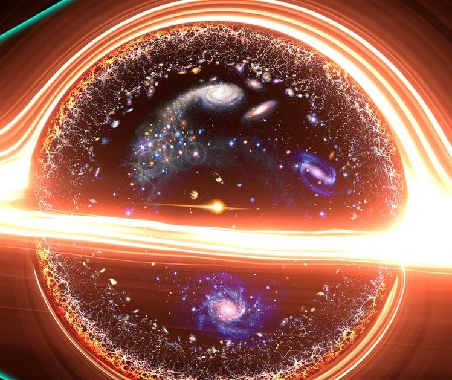

black hole
A black hole is a region of spacetime where gravity is so strong that nothing, including light or other electromagnetic waves, has enough energy to escape it.[2] The theory of general relativity predicts that a sufficiently compact mass can deform spacetime to form a black hole
American researchers now say Ramanujan’s formula could explain the behaviour of black holes, the Daily Mail reported. “We have solved the problems from his last mysterious letters. For people who work in this area of math, the problem has been open for 90 years" Emory University mathematician Ken Ono said.
A black hole is a region of spacetime from which gravity prevents anything, including light, from escaping.
Born in a rural village in Tamil Nadu, Ramanujan, a self-taught mathematician, spent much of his time thinking about mathematics that he flunked out of college twice, Ono said.
The maths genius’s letter described several new functions that behaved differently from known theta functions, or modular forms, and yet closely mimicked them. Functions are equations that can be drawn as graphs on an axis, like a sine wave, and produce an output when computed for any chosen input or value, the report said.
Ramanujan conjectured that his mock modular forms corresponded to the ordinary modular forms earlier identified by Carl Jacobi, and that both would wind up with similar outputs for roots of 1.
“It wasn’t until 2002, through the work of Sander Zwegers, that we had a description of the functions that Ramanujan was writing about in 1920," Ono said.
Ono and colleagues drew on modern mathematical tools that had not been developed before Ramanujan’s death to prove this theory was correct. “We proved that Ramanujan was right. We found the formula explaining one of the visions that he believed came from his goddess," Ono said.
Researchers were also stunned to find the function could be used even today. “No one was talking about black holes back in the 1920s when Ramanujan first came up with mock modular forms, and yet, his work may unlock secrets about them," Ono said. Ramanujan died young at the age of 32 on April 26, 1920.

Explorations of quantum black holes in string theory have led to fascinating connections with the work of Ramanujan on partitions and mock theta functions, which in turn relate to diverse topics in number theory and enumerative geometry. This article aims to explain the physical significance of these interconnections.
.png)
Explorations of quantum black holes in string theory have led to fascinating connections with the work of Ramanujan on partitions and mock theta functions, which in turn relate to diverse topics in number theory and enumerative geometry. This article aims to explain the physical significance of these interconnections.
Explorations of quantum black holes in string theory have led to fascinating connections with the work of Ramanujan on partitions and mock theta functions, which in turn relate to diverse topics in number theory and enumerative geometry. This article aims to explain the physical significance of these interconnections.